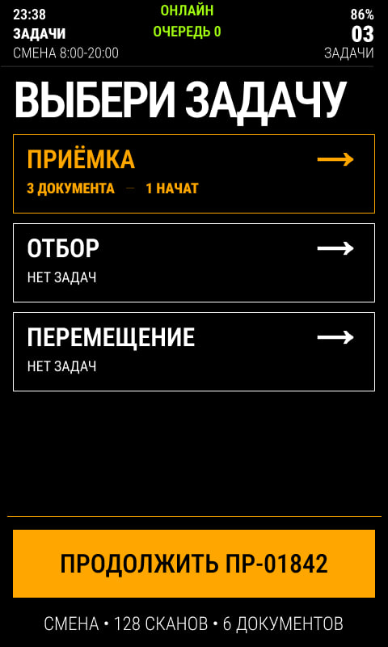
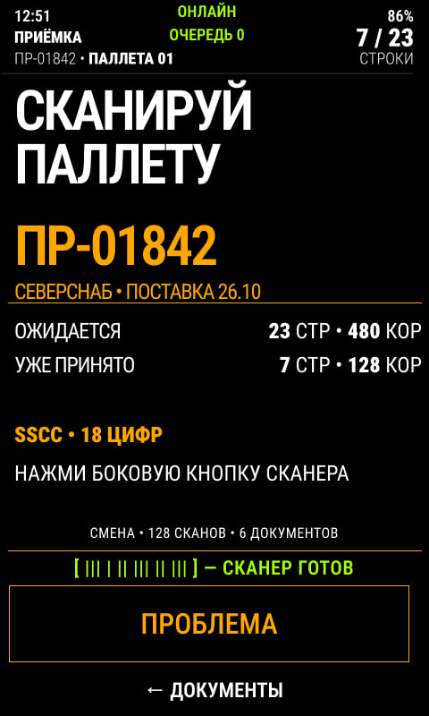
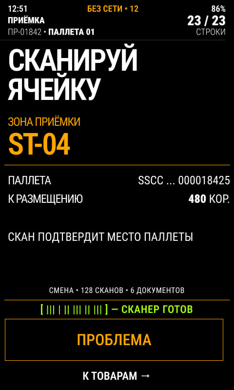
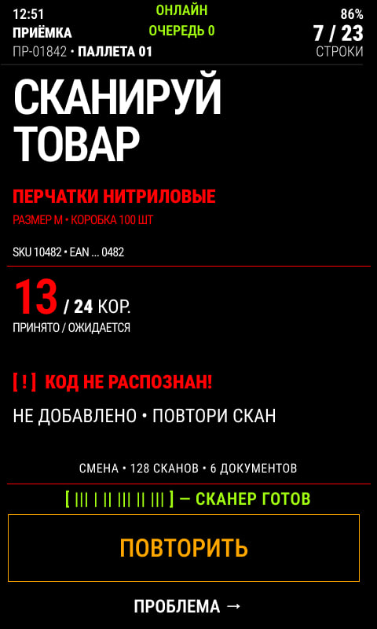
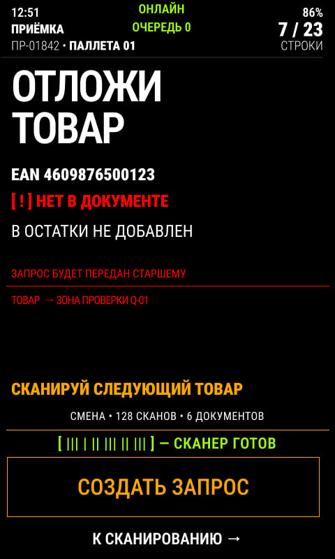
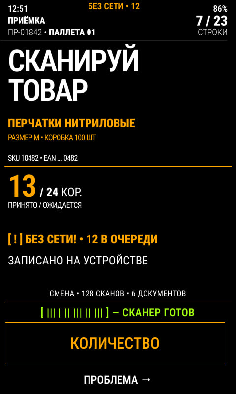

Сканирует и принимает
Ему нужно быстро понять: товар принят, код не найден, количество изменилось или нужен старший.
01 · Склад 15 · Интерфейс терминала сбора данных
Я спроектировал приёмку вокруг следующего действия кладовщика. Крупная команда показывает, что сканировать; статус объясняет, что записано; отдельный сценарий помогает разобрать проблемный товар.
Рассмотреть интерфейс ↓
01 — О проекте
«Склад 15» объединяет приёмку по заданию и по факту, обычный и маркированный товар, проверку транспортных упаковок, онлайн- и офлайн-режимы и разные бизнес-процессы загрузки в 1С. Пользователь работает в маленьком ТСД, а результат операции живёт сразу в трёх системах.
Ему нужно быстро понять: товар принят, код не найден, количество изменилось или нужен старший.
У каждого слоя свой результат. «Сохранено на ТСД» ещё не означает «принято в учёте».
Ошибку приходится искать, объяснять поставщику и исправлять в учётной системе.
Получает результат действия на ТСД.
При отсутствии сети операции остаются в локальной очереди.
Передача подтверждается отдельно от локальной записи.
Финальный статус появляется после ответа учётной системы.
02 — Люди и роли
Я раскладывал сценарий вокруг четырёх ролей, которые отвечают за разные части операции.
Выбирает задачу, сканирует паллету и товар, откладывает проблемные позиции на проверку и подтверждает место паллеты.
Подтверждает приёмку с расхождением, неизвестный товар, отсутствие марки и доверительную проверку упаковки.
Следят за справочниками, бизнес-процессами, правами, отказами загрузки и журналом проблемных кодов.
Я связал пользовательские действия, состояния документа, роли, исключения и события, которые нужно измерять.
03 — Проблема
Сложность пряталась в переходах: что происходит после повторного скана, где лежит документ без связи, можно ли закрыть неполную поставку и кто отвечает за неизвестный штрихкод.
По заданию или по факту? Полная, частичная или доверительная проверка? Онлайн или офлайн? Если режим не виден, пользователь принимает решение вслепую.
Повторное действие может увеличить количество, создать дубль или изменить последнюю строку. Интерфейс должен показать последствие, а не только факт нажатия.
Документ может быть сохранён на терминале, ждать отправки, находиться на сервере или быть отклонённым в 1С. Смешивать эти состояния опасно.
Неизвестный ШК, отсутствие марки и расхождение требуют причины, владельца и понятного следующего шага — без потери уже выполненной работы.
04 — Исследование
Я собрал карту требований из документации Cleverence: приёмка, маркировка, неизвестные штрихкоды, транспортные упаковки, онлайн-режим и запрет неполного завершения. Так появились четыре зоны, в которых интерфейс должен снижать риск: сканирование, количество, жизненный цикл документа и исключения.
Задача, документ и паллета остаются видимыми.
Принято / ожидается вместе с единицей измерения.
Не распознан — не добавлен. Не в документе — на проверку.
Без сети видны локальная запись и очередь.
«Пользователь не должен помнить настройки. Система должна показать режим, последствия действия и безопасный следующий шаг».
Принцип, который стал основой решения
05 — Метрики успеха
Для пилота я определил, какие данные собрать по документам и как сравнить одинаковые сценарии. В качестве главной единицы измерения нужен общий ID документа от ТСД до 1С.
06 — Гипотезы
Приоритеты расставил по цене ошибки: сначала то, что может испортить учёт или заставить смену начинать заново.
07 — Интервью
План исследования: 2–3 кладовщика, 1–2 старших смены, оператор 1С и QA/интегратор. Разговор — 30–45 минут, наблюдение в смене — 60–90 минут.
08 — Данные
Опрос помогает понять язык и привычки, но эффект покажут события продукта. Поэтому в аналитике нужны скан, результат, изменение количества, создание исключения, передача и финальный статус в 1С.
Версия, устройство, смена, режим связи, поставщик и размер документа.
Среднее скрывает длинные исключения. Для времени разбора нужны медиана и p90.
Отдельно проверить модели ТСД, online/offline и разные типы товара.
09 — Сценарий
В каждом шаге есть одна команда. Ошибки и отсутствие связи меняют состояние экрана, но сохраняют контекст документа.
10 — Интерфейс
Шесть экранов связывают задачу, паллету, количество и исключения. Крупный текст задаёт действие, жёлтый выделяет рабочий фокус, красный сообщает об ошибке, зелёный показывает готовность сканера.
На первом экране доступны три операции. У приёмки показаны документы и число начатых, а внизу есть прямое действие «Продолжить ПР-01842».
При выборе документа номер, поставщик и прогресс помогают найти нужную поставку. Человеку не приходится вспоминать, где он остановился.

Открыть макет ↗ Открыть визуализацию ↗
Открыть визуализацию ↗Экран «Сканируй паллету» держит рядом номер поставки, ожидаемое и принятое количество. Подсказка уточняет тип кода: SSCC, 18 цифр.
После обработки строк команда меняется на «Сканируй ячейку». На экране остаются паллета, объём к размещению и зона ST-04. Следующий скан подтверждает место, а не ещё одну единицу товара.

Открыть макет ↗
Открыть макет ↗«Код не распознан» означает, что товар не добавлен: основной шаг — повторить скан. На экране сохраняются товар и принятое количество 13/24 короба.
«Нет в документе» требует другого решения: отложить товар в зону проверки Q-01 и создать запрос старшему. Этот товар не добавлен в остатки; остальные позиции можно продолжать сканировать.

Открыть макет ↗
Открыть макет ↗Шапка и рабочая область сообщают одно и то же: «Без сети · 12 в очереди». Подпись «Записано на устройстве» объясняет, где находятся данные.
Кладовщик видит документ, паллету и количество 13/24 короба. Готовность сканера показана отдельно от сети: устройство может читать код, даже когда отправка недоступна.

Открыть макет ↗Общая шапка удерживает контекст. Нижняя зона сохраняет постоянное место действий. Смысл каждого цвета продублирован текстом.
ПР-01842, 13/24 короба, 128 сканов и 12 операций в очереди — данные сценария в макетах, а не измеренные результаты внедрения. Визуализации на терминале показывают интерфейс в окружении склада.
11 — UX-тесты
План теста — 6 участников: кладовщики, старший смены, оператор 1С и QA. Каждый проходит один и тот же набор сценариев на прототипе.
12 — Итог
Результат — шесть связанных экранов ТСД: вход в задачу, паллета, скан с ошибкой, исключение, работа без сети и подтверждение места. Схема передачи отдельно описывает путь от устройства до 1С.
13 — Пилот
Пилот отвечает на вопрос: уменьшается ли цена ошибки, не замедляя обычную приёмку.
Разобрать последние случаи, собрать baseline и проверить, где в цепочке ТСД → сервер → 1С теряется статус.
Проверить 6 участников на скане, количестве, исключении, offline и завершении.
Запустить ограниченную группу устройств на две недели и сравнить сопоставимый период.
Сверить неполные документы, исправления остатков, неизвестные ШК, передачу и время приёмки.
14 — Выводы
Вместо редизайна одного экрана я собрал модель для всей операции: от режима и скана до исключения, передачи и размещения.
У неё есть причина, владелец, статус и следующий шаг.
Пользователь должен понимать не только что сделал, но и что теперь может произойти.
Именно там появятся фактические цифры эффекта и новые исключения.
Вывод для продукта